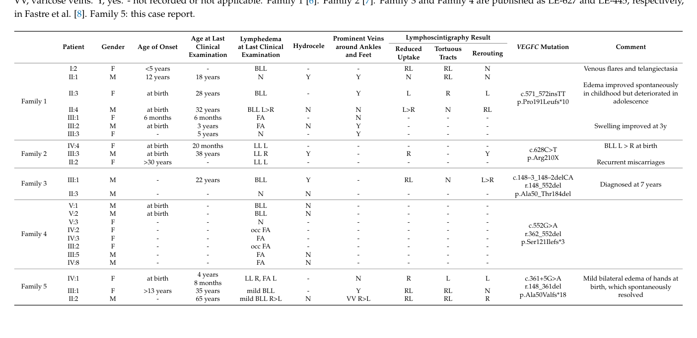

Congenital primary lymphedema of Gordon (hereditary lymphedema type ID, LMPH1D) is a rare autosomal dominant Milroy-like primary lymphedema caused by heterozygous loss-of-function variants in VEGFC, which encodes vascular endothelial growth factor C, the principal ligand of the lymphatic receptor VEGFR3 (FLT4). Truncating, frameshift and splice-altering VEGFC alleles yield a protein lacking an intact VEGF homology domain that is poorly secreted and biologically inactive, so the disease mechanism is haploinsufficiency rather than dominant-negative interference. Reduced VEGFC-VEGFR3 signaling leads to hypoplasia and dysfunction of the dermal lymphatic network of the lower limbs. Affected individuals usually present at or soon after birth with painless bilateral pedal or below-knee lymphedema, often with prominent wide-calibre veins over the shins and feet, upslanting dysplastic toenails and, in some males, hydrocele. Penetrance is incomplete and expressivity varies within and between families. Lymphoscintigraphy shows tortuous lymphatic tracts with rerouting and reduced inguinal uptake, a pattern that differs from the absent main-tract uptake typical of FLT4-related Milroy disease. Management is supportive, centred on compression.
Ask a research question about Congenital Primary Lymphedema of Gordon. OpenScientist will conduct autonomous deep research using the Disorder Mechanisms Knowledge Base and PubMed literature (typically 10-30 minutes).
Do not include personal health information in your question. Questions and results are cached in your browser's local storage.
Conditions with similar clinical presentations that must be differentiated from Congenital Primary Lymphedema of Gordon:
name: Congenital Primary Lymphedema of Gordon
creation_date: "2026-10-08T00:00:00Z"
description: >-
Congenital primary lymphedema of Gordon (hereditary lymphedema type ID, LMPH1D)
is a rare autosomal dominant Milroy-like primary lymphedema caused by
heterozygous loss-of-function variants in VEGFC, which encodes vascular
endothelial growth factor C, the principal ligand of the lymphatic receptor
VEGFR3 (FLT4). Truncating, frameshift and splice-altering VEGFC alleles yield
a protein lacking an intact VEGF homology domain that is poorly secreted and
biologically inactive, so the disease mechanism is haploinsufficiency rather
than dominant-negative interference. Reduced VEGFC-VEGFR3 signaling leads to
hypoplasia and dysfunction of the dermal lymphatic network of the lower limbs.
Affected individuals usually present at or soon after birth with painless
bilateral pedal or below-knee lymphedema, often with prominent wide-calibre
veins over the shins and feet, upslanting dysplastic toenails and, in some
males, hydrocele. Penetrance is incomplete and expressivity varies within and
between families. Lymphoscintigraphy shows tortuous lymphatic tracts with
rerouting and reduced inguinal uptake, a pattern that differs from the
absent main-tract uptake typical of FLT4-related Milroy disease. Management is
supportive, centred on compression.
category: Mendelian
parents:
- lymphatic malformation
synonyms:
- VEGFC-related congenital primary lymphedema
- hereditary lymphedema type ID
- lymphedema, hereditary, ID
- LMPH1D
- Milroy-like primary lymphedema
- lymphatic malformation 4
- LMPHM4
- VEGFC hereditary lymphedema
disease_term:
preferred_term: congenital primary lymphedema of Gordon
term:
id: MONDO:0035500
label: congenital primary lymphedema of Gordon
mappings:
mondo_mappings:
- term:
id: MONDO:0014393
label: lymphatic malformation 4
mapping_predicate: skos:exactMatch
mapping_source: MONDO
mapping_justification: >-
MONDO:0014393 (xref OMIM:615907) is defined as any hereditary lymphedema
caused by a mutation in VEGFC, and lists the synonyms hereditary
lymphedema type 1D and VEGFC hereditary lymphedema. That is the scope of
this entry, whose primary term MONDO:0035500 is the Orphanet-derived
class (Orphanet:569821) for the same VEGFC-related Milroy-like primary
lymphedema. MONDO keeps the OMIM-derived and Orphanet-derived concepts as
sibling classes under lymphatic malformation with no subsumption between
them, so both are recorded here rather than as two entries.
classifications:
harrisons_chapter:
- classification_value: CARDIOVASCULAR
inheritance:
- name: Autosomal dominant inheritance
inheritance_term:
preferred_term: Autosomal dominant inheritance
term:
id: HP:0000006
label: Autosomal dominant inheritance
penetrance: INCOMPLETE
expressivity: VARIABLE
description: >-
Heterozygous VEGFC variants co-segregate with lymphedema across multiple
generations in the reported families. Penetrance is incomplete: some
variant carriers have no clinical swelling or only occasional ankle
swelling, although lymphoscintigraphy can still show abnormal drainage in
clinically unaffected carriers. Severity varies within families. A single
proband carrying biallelic VEGFC variants (one inherited from each parent)
has also been reported.
evidence:
- reference: PMID:23410910
reference_title: "Mutation in vascular endothelial growth factor-C, a ligand for vascular endothelial growth factor receptor-3, is associated with autosomal dominant milroy-like primary lymphedema."
supports: SUPPORT
evidence_source: HUMAN_CLINICAL
snippet: >-
The variant cosegregated with the affected status in the family.
explanation: >-
Co-segregation of the heterozygous VEGFC frameshift variant with
lymphedema in the founding family supports dominant transmission.
- reference: PMID:24744435
reference_title: A novel stop mutation in the vascular endothelial growth factor-C gene (VEGFC) results in Milroy-like disease.
supports: SUPPORT
evidence_source: HUMAN_CLINICAL
snippet: >-
The mutation segregates with the phenotype in the family according to a
dominant model with full penetrance.
explanation: >-
An independent family with a VEGFC stop variant shows dominant
segregation. This particular family happened to be fully penetrant;
across all reported families penetrance is incomplete (see the next
item).
- reference: PMID:30071673
reference_title: A Novel Splice-Site Mutation in VEGFC Is Associated with Congenital Primary Lymphoedema of Gordon.
supports: SUPPORT
evidence_source: HUMAN_CLINICAL
snippet: >-
There were also reports of reduced penetrance since six individuals
carrying a VEGFC mutation had no clinical signs of primary lymphedema (n =
4) or reported occasional swelling (n = 2) of feet and ankles.
explanation: >-
Pooled across the five families reported to that date, six variant
carriers were clinically unaffected or minimally affected, establishing
incomplete penetrance.
- reference: PMID:30071673
reference_title: A Novel Splice-Site Mutation in VEGFC Is Associated with Congenital Primary Lymphoedema of Gordon.
supports: SUPPORT
evidence_source: HUMAN_CLINICAL
snippet: >-
The extent of the lymphedema varies within the family with the mother of
the proband being very mildly affected and the grandfather moderately
affected.
explanation: >-
Documents variable expressivity among carriers of the same VEGFC allele.
pathophysiology:
- name: VEGFC Haploinsufficiency
biological_scale: MOLECULAR
description: >-
Heterozygous frameshift, nonsense and splice-site VEGFC variants are all
predicted to truncate the protein so that it lacks a complete VEGF homology
domain, which is required to activate VEGFR3. The c.571_572insTT protein is
stable but poorly secreted. In a zebrafish floorplate overexpression assay
the mutant proteins lose the ability to induce vessel sprouting, and
co-expression with wild-type VEGFC does not suppress wild-type activity,
so the mutant allele acts by loss of function (haploinsufficiency) rather
than as a dominant negative. VEGFC is secreted as an inactive precursor
that becomes an active VEGFR3 ligand only after proteolytic processing by
the ADAMTS3-CCBE1 complex. The biallelic p.Ser65Arg allele, reported in one
patient, altered this processing in vitro.
genes:
- preferred_term: VEGFC
term:
id: hgnc:12682
label: VEGFC
molecular_functions:
- preferred_term: vascular endothelial growth factor receptor 3 binding
modifier: DECREASED
term:
id: GO:0043185
label: vascular endothelial growth factor receptor 3 binding
evidence:
- reference: PMID:23410910
reference_title: "Mutation in vascular endothelial growth factor-C, a ligand for vascular endothelial growth factor receptor-3, is associated with autosomal dominant milroy-like primary lymphedema."
supports: SUPPORT
evidence_source: MODEL_ORGANISM
snippet: >-
However, when overexpressing the human c.571_572insTT variant in the
floorplate, no sprouting of vessels was observed, indicating that the base
changes have a marked effect on the activity of VEGFC.
explanation: >-
In vivo zebrafish assay showing that the patient frameshift allele has
lost VEGFC biological activity.
- reference: PMID:30071673
reference_title: A Novel Splice-Site Mutation in VEGFC Is Associated with Congenital Primary Lymphoedema of Gordon.
supports: SUPPORT
evidence_source: MODEL_ORGANISM
snippet: >-
Therefore, we conclude that the vegfc-intron 2–3 c.325+5G>A variant does
not result in a protein with dominant negative properties but most likely
leads to a haplo-insufficient phenotype.
explanation: >-
Co-expression of mutant and wild-type Vegfc in zebrafish excludes a
dominant-negative effect, supporting haploinsufficiency.
- reference: PMID:30071673
reference_title: A Novel Splice-Site Mutation in VEGFC Is Associated with Congenital Primary Lymphoedema of Gordon.
supports: SUPPORT
evidence_source: HUMAN_CLINICAL
snippet: >-
All reported mutations are predicted to form a truncated protein, which is
deemed to be dysfunctional.
explanation: >-
Summarizes that every VEGFC allele reported in this disorder is
truncating.
- reference: PMID:30071673
reference_title: A Novel Splice-Site Mutation in VEGFC Is Associated with Congenital Primary Lymphoedema of Gordon.
supports: SUPPORT
evidence_source: IN_VITRO
quote_role: BACKGROUND
snippet: >-
The work of Gordon et al. showed that, although the truncated mutant
protein c.571_572insTT is stable, it is not secreted efficiently
explanation: >-
Restates the cell-culture finding from the founding report that the
frameshift protein is retained rather than secreted, so less ligand
reaches the extracellular space.
- reference: PMID:27159393
reference_title: Proteolytic activation defines distinct lymphangiogenic mechanisms for VEGFC and VEGFD.
supports: SUPPORT
evidence_source: IN_VITRO
snippet: >-
Here, we have developed and used biochemical and cellular tools to
demonstrate that an ADAMTS3-CCBE1 complex can form independently of
VEGFR3 and is required to convert VEGFC, but not VEGFD, into an active
ligand.
explanation: >-
Establishes that VEGFC must be proteolytically activated to signal, the
step that the p.Ser65Arg allele perturbs.
- reference: PMID:32592340
reference_title: Investigation on the role of biallelic variants in VEGF-C found in a patient affected by Milroy-like lymphedema.
supports: SUPPORT
evidence_source: IN_VITRO
snippet: >-
Functional characterization of the p.(Ser65Arg) variation in vitro showed
alterations in VEGF-C processing.
explanation: >-
A patient missense allele impairs VEGFC maturation in vitro.
downstream:
- target: Reduced VEGFR3 Signaling in Lymphatic Endothelium
causal_link_type: DIRECT
description: >-
A truncated VEGFC lacking the VEGF homology domain cannot activate
VEGFR3, halving the available ligand dose.
evidence:
- reference: PMID:30071673
reference_title: A Novel Splice-Site Mutation in VEGFC Is Associated with Congenital Primary Lymphoedema of Gordon.
supports: SUPPORT
evidence_source: HUMAN_CLINICAL
directness: INDIRECT
snippet: >-
The other four truncated proteins (Figure 2D) also lack a complete VHD,
which is most likely going to affect the phosphorylation of VEGFR3.
explanation: >-
Links loss of the VEGF homology domain in the mutant proteins to reduced
VEGFR3 activation; this is an inference by the authors rather than a
direct measurement.
- name: Reduced VEGFR3 Signaling in Lymphatic Endothelium
biological_scale: CELLULAR
description: >-
VEGFC is the paracrine factor that drives sprouting, migration and
proliferation of lymphatic endothelial cells through VEGFR3. With only one
functional VEGFC allele, VEGFR3 signaling in lymphatic endothelium is
insufficient for normal lymphatic development, the same pathway that is
disrupted by kinase-dead FLT4 variants in Milroy disease.
cell_types:
- preferred_term: lymphatic endothelial cell
term:
id: CL:0002138
label: endothelial cell of lymphatic vessel
biological_processes:
- preferred_term: vascular endothelial growth factor receptor-3 signaling pathway
modifier: DECREASED
term:
id: GO:0036325
label: vascular endothelial growth factor receptor-3 signaling pathway
evidence:
- reference: PMID:14634646
reference_title: Vascular endothelial growth factor C is required for sprouting of the first lymphatic vessels from embryonic veins.
supports: SUPPORT
evidence_source: MODEL_ORGANISM
snippet: >-
Our results indicate that VEGF-C is the paracrine factor essential for
lymphangiogenesis, and show that both Vegfc alleles are required for normal
lymphatic development.
explanation: >-
Mouse genetics show that both Vegfc alleles are needed, establishing a
dosage-sensitive VEGFC-VEGFR3 axis.
- reference: PMID:35817543
reference_title: Molecular Mechanisms Driving Lymphedema and Other Lymphatic Anomalies.
supports: SUPPORT
evidence_source: OTHER
quote_role: REVIEW_SYNTHESIS
snippet: >-
VEGF-C/VEGFR3 signaling is necessary for every step of lymphatic vascular
development and maintenance.
explanation: >-
Review synthesis placing VEGFC-VEGFR3 signaling at the centre of
lymphatic development and maintenance.
downstream:
- target: Dermal Lymphatic Vessel Hypoplasia
causal_link_type: DIRECT
description: >-
Insufficient VEGFR3 activation reduces sprouting and growth of the dermal
lymphatic plexus.
evidence:
- reference: PMID:35817543
reference_title: Molecular Mechanisms Driving Lymphedema and Other Lymphatic Anomalies.
supports: SUPPORT
evidence_source: OTHER
quote_role: REVIEW_SYNTHESIS
snippet: >-
Thus, it is reasonable to suspect a reduction in the number of LECs as
one of the disease-initiating defects in patients with mutations in
VEGFR3, VEGFC, CCBE1, ADAMTS3, and GATA2.
explanation: >-
Connects reduced VEGFC signaling to a deficit of lymphatic endothelial
cells; stated as a reasoned hypothesis by the review authors.
- name: Dermal Lymphatic Vessel Hypoplasia
biological_scale: TISSUE
description: >-
Vegfc heterozygous mice and Chy-3 mice, which are hemizygous for a deletion
including Vegfc, develop a hypoplastic dermal lymphatic network with
lymphedema of the hind limbs, while the blood vasculature is unaffected.
Drainage from the superficial dermal lymphatics to the deep lymphatics of
the lower limbs fails, matching the lower-limb predilection of the human
disease.
biological_processes:
- preferred_term: lymphangiogenesis
modifier: DECREASED
term:
id: GO:0001946
label: lymphangiogenesis
evidence:
- reference: PMID:14634646
reference_title: Vascular endothelial growth factor C is required for sprouting of the first lymphatic vessels from embryonic veins.
supports: SUPPORT
evidence_source: MODEL_ORGANISM
snippet: >-
The lack of lymphatic vessels resulted in prenatal death due to fluid
accumulation in tissues, and Vegfc+/- mice developed cutaneous lymphatic
hypoplasia and lymphedema.
explanation: >-
Vegfc heterozygous mice, the genetic counterpart of the human disorder,
develop cutaneous lymphatic hypoplasia.
- reference: PMID:17584866
reference_title: Chy-3 mice are Vegfc haploinsufficient and exhibit defective dermal superficial to deep lymphatic transition and dermal lymphatic hypoplasia.
supports: SUPPORT
evidence_source: MODEL_ORGANISM
snippet: >-
Visual lymphangiography and immunofluorescence staining showed a
hypoplastic dermal lymphatic network, whereas the blood vasculature
appeared unaffected.
explanation: >-
An independent Vegfc-haploinsufficient mouse model shows dermal
lymphatic hypoplasia with sparing of blood vessels.
downstream:
- target: Impaired Lower Limb Lymphatic Drainage
causal_link_type: DIRECT
description: >-
A hypoplastic dermal lymphatic network cannot carry lymph from the
superficial dermis of the lower limbs to the deep truncal lymphatics.
evidence:
- reference: PMID:17584866
reference_title: Chy-3 mice are Vegfc haploinsufficient and exhibit defective dermal superficial to deep lymphatic transition and dermal lymphatic hypoplasia.
supports: SUPPORT
evidence_source: MODEL_ORGANISM
snippet: >-
Lymphatic tracer was not transported from the dermal to the deep truncal
lymphatic system in the lower limbs, even though the deep lymphatic
vessels and nodes were present and patent.
explanation: >-
Shows that the dermal lymphatic defect impairs lower-limb lymph
transport in a Vegfc-haploinsufficient model.
- target: Abnormal lymphatic tracts on lymphoscintigraphy
causal_link_type: DIRECT
description: >-
The structurally abnormal lymphatic network is visualized clinically as
tortuous, rerouted tracts on lymphoscintigraphy.
evidence:
- reference: PMID:30071673
reference_title: A Novel Splice-Site Mutation in VEGFC Is Associated with Congenital Primary Lymphoedema of Gordon.
supports: SUPPORT
evidence_source: HUMAN_CLINICAL
directness: INDIRECT
snippet: >-
The tracer is following tortuous tracts with rerouting around feet,
ankles, and lower legs, which indicates that the tracer is not following
the normal tracts to the groin area seen in healthy controls.
explanation: >-
The abnormal tracer route in VEGFC patients is the imaging readout of
the abnormal lymphatic network; the link to dermal hypoplasia rests on
the mouse models.
- name: Impaired Lower Limb Lymphatic Drainage
biological_scale: TISSUE
description: >-
In patients, lymphoscintigraphy shows reduced tracer uptake at the groin
with tortuous tracts and rerouting around the feet, ankles and lower legs,
indicating dysfunctional initial lymphatics. Interstitial fluid that is not
cleared accumulates as lymphedema of the feet and lower legs.
evidence:
- reference: PMID:30071673
reference_title: A Novel Splice-Site Mutation in VEGFC Is Associated with Congenital Primary Lymphoedema of Gordon.
supports: SUPPORT
evidence_source: HUMAN_CLINICAL
snippet: >-
In summary, the cases with VEGFC mutations where lymphoscintigraphy has
been performed all show some uptake in the groin at a reduced rate.
explanation: >-
Reduced inguinal uptake in every imaged VEGFC case documents impaired
lower-limb lymph drainage in patients.
downstream:
- target: Predominantly lower limb lymphedema
causal_link_type: DIRECT
description: >-
Failure to clear interstitial fluid from the lower limbs produces pedal
and below-knee lymphedema.
- target: Hydrocele testis
causal_link_type: INDIRECT_UNKNOWN_INTERMEDIATES
description: >-
Hydrocele is reported in a subset of affected males, as in Milroy
disease, and is attributed to defective lymphatic drainage; the specific
genital lymphatic defect has not been characterized in VEGFC patients.
- target: Edema of the dorsum of hands
causal_link_type: INDIRECT_UNKNOWN_INTERMEDIATES
description: >-
Transient neonatal hand edema has been reported in one proband, implying
that the drainage defect can extend beyond the lower limbs.
- target: Cellulitis
causal_link_type: INDIRECT_UNKNOWN_INTERMEDIATES
description: >-
Lymph stasis predisposes to skin infection in primary lymphedema
generally; this edge is extrapolated and has not been documented in
VEGFC patients.
- target: Upslanting toenail
causal_link_type: INDIRECT_KNOWN_INTERMEDIATES
description: >-
Upslanting dysplastic toenails result from chronic edema of the nail bed.
evidence:
- reference: PMID:30071673
reference_title: A Novel Splice-Site Mutation in VEGFC Is Associated with Congenital Primary Lymphoedema of Gordon.
supports: SUPPORT
evidence_source: HUMAN_CLINICAL
snippet: >-
There was bilateral pitting edema in both feet and the right lower leg
(Figure 1I–K) with mildly dysplastic and upslanting toenails (due to
edema of the nail bed).
explanation: >-
The authors attribute the toenail dysplasia to edema of the nail bed.
phenotypes:
- name: Predominantly lower limb lymphedema
category: Cardiovascular
diagnostic: true
frequency: FREQUENT
description: >-
Painless bilateral lymphedema of the feet that frequently extends below the
knee, usually present at birth or within the first year. Across 23 reported
variant carriers from five families, 17 (74%) had swelling, most often
bilateral below-knee lymphedema; 70% of those with a recorded age of onset
presented congenitally.
phenotype_term:
preferred_term: Predominantly lower limb lymphedema
term:
id: HP:0003550
label: Predominantly lower limb lymphedema
evidence:
- reference: PMID:30071673
reference_title: A Novel Splice-Site Mutation in VEGFC Is Associated with Congenital Primary Lymphoedema of Gordon.
supports: SUPPORT
evidence_source: HUMAN_CLINICAL
snippet: >-
For example, 17 of the 23 individuals (74%) have some forms of swelling in
which most had bilateral below-knee lymphedema (n = 12) but some cases had
isolated ankle and foot lymphedema (n = 5).
explanation: >-
Pooled frequency (74%) of lower-limb lymphedema among VEGFC variant
carriers maps to the FREQUENT band.
- reference: PMID:30071673
reference_title: A Novel Splice-Site Mutation in VEGFC Is Associated with Congenital Primary Lymphoedema of Gordon.
supports: SUPPORT
evidence_source: HUMAN_CLINICAL
snippet: >-
The majority of individuals (70%, nine of the 13 where the age of onset has
been recorded) presented with congenital (<1 year) primary lymphedema.
explanation: >-
Supports congenital onset of the lymphedema in most affected individuals.
- reference: PMID:24744435
reference_title: A novel stop mutation in the vascular endothelial growth factor-C gene (VEGFC) results in Milroy-like disease.
supports: SUPPORT
evidence_source: HUMAN_CLINICAL
snippet: >-
We report a newborn patient with an external phenotype consistent with
Milroy disease and a truncating mutation (p.R210X) in the VEGFC gene
detected by exome sequence analysis.
explanation: >-
A newborn presentation with Milroy-like congenital lymphedema in an
independent VEGFC family.
- name: Abnormal lymphatic tracts on lymphoscintigraphy
category: Cardiovascular
diagnostic: true
description: >-
Lymphoscintigraphy shows tortuous lymphatic tracts with rerouting of tracer
around the feet, ankles and lower legs and reduced inguinal uptake. Abnormal
tracts can be seen in carriers with little or no clinical swelling.
phenotype_term:
preferred_term: Tortuous lower limb lymphatic tracts
term:
id: HP:0100766
label: Abnormal lymphatic vessel morphology
evidence:
- reference: PMID:30071673
reference_title: A Novel Splice-Site Mutation in VEGFC Is Associated with Congenital Primary Lymphoedema of Gordon.
supports: SUPPORT
evidence_source: HUMAN_CLINICAL
snippet: >-
The tracer is following tortuous tracts with rerouting around feet,
ankles, and lower legs, which indicates that the tracer is not following
the normal tracts to the groin area seen in healthy controls.
explanation: >-
Describes the characteristic abnormal lymphatic tracts on imaging in
VEGFC cases.
- name: Prominent superficial veins
category: Cardiovascular
frequency: FREQUENT
description: >-
Prominent, wide-calibre veins over the shins and on the dorsa of the feet
are a characteristic sign; among nine reported individuals in whom this was
recorded, five (55%) had them. The mechanism linking VEGFC deficiency to the
venous sign has not been established.
phenotype_term:
preferred_term: Prominent superficial veins
term:
id: HP:0001015
label: Prominent superficial veins
evidence:
- reference: PMID:30071673
reference_title: A Novel Splice-Site Mutation in VEGFC Is Associated with Congenital Primary Lymphoedema of Gordon.
supports: SUPPORT
evidence_source: HUMAN_CLINICAL
snippet: >-
Congenital primary lymphedema of Gordon typically presents, like Milroy
disease, with congenital, pedal lymphedema with prominent, wide caliber
veins over the shins and on the dorsa of the feet.
explanation: >-
States prominent veins as a typical presenting sign.
- reference: PMID:30071673
reference_title: A Novel Splice-Site Mutation in VEGFC Is Associated with Congenital Primary Lymphoedema of Gordon.
supports: SUPPORT
evidence_source: HUMAN_CLINICAL
snippet: >-
Not all the reports on VEGFC cases confirm the absence or presence of
prominent veins but, in the nine individuals where a note has been made,
five of those (55%) had such veins.
explanation: >-
Pooled frequency of 55% maps to the FREQUENT band.
- name: Upslanting toenail
category: Integumentary
description: >-
Upslanting, dysplastic toenails, attributed to edema of the nail bed, often
with deep interphalangeal creases of the toes (no HPO term exists for deep
toe interphalangeal creases).
phenotype_term:
preferred_term: Upslanting toenail
term:
id: HP:0032344
label: Upslanting toenail
evidence:
- reference: PMID:30071673
reference_title: A Novel Splice-Site Mutation in VEGFC Is Associated with Congenital Primary Lymphoedema of Gordon.
supports: SUPPORT
evidence_source: HUMAN_CLINICAL
snippet: >-
The patients have upslanting, dysplastic toenails and deep,
interphalangeal creases of the toes.
explanation: >-
Lists upslanting dysplastic toenails among the typical features.
- name: Hydrocele testis
category: Genitourinary
frequency: OCCASIONAL
description: >-
Hydrocele was present in 3 of 11 (27%) reported affected males, a frequency
comparable to the 37% reported in Milroy disease.
phenotype_term:
preferred_term: Hydrocele testis
term:
id: HP:0000034
label: Hydrocele testis
evidence:
- reference: PMID:30071673
reference_title: A Novel Splice-Site Mutation in VEGFC Is Associated with Congenital Primary Lymphoedema of Gordon.
supports: SUPPORT
evidence_source: HUMAN_CLINICAL
snippet: >-
Of other clinical signs, 27% (3/11) of the males presented with hydrocele.
explanation: >-
27% of males maps to the OCCASIONAL band.
- name: Edema of the dorsum of hands
category: Cardiovascular
description: >-
Mild bilateral edema of the dorsa of the hands was noted postnatally in one
proband and resolved spontaneously; the authors describe upper-limb
involvement as unusual for this disorder.
phenotype_term:
preferred_term: Edema of the dorsum of hands
term:
id: HP:0007514
label: Edema of the dorsum of hands
evidence:
- reference: PMID:30071673
reference_title: A Novel Splice-Site Mutation in VEGFC Is Associated with Congenital Primary Lymphoedema of Gordon.
supports: SUPPORT
evidence_source: HUMAN_CLINICAL
snippet: >-
Albeit mild, the proband also had lymphedema of the dorsi of both hands
post-natally, which is a little unusual.
explanation: >-
Single-case report of transient hand lymphedema; frequency omitted.
- name: Cellulitis
category: Infectious
description: >-
Cellulitis (erysipelas) is the main acute complication of primary
lymphedema in general. It has not been reported in the published VEGFC
families, so this phenotype is extrapolated from primary lymphedema as a
whole and no frequency is given.
phenotype_term:
preferred_term: Cellulitis
term:
id: HP:0100658
label: Cellulitis
evidence:
- reference: PMID:33407666
reference_title: Primary lymphedema French National Diagnosis and Care Protocol (PNDS; Protocole National de Diagnostic et de Soins).
supports: SUPPORT
evidence_source: OTHER
quote_role: REVIEW_SYNTHESIS
directness: INDIRECT
snippet: >-
The main acute lymphedema complication is cellulitis (erysipelas).
explanation: >-
National care protocol for primary lymphedema naming cellulitis as the
main acute complication; applies to this disorder only by extrapolation.
genetic:
- name: VEGFC
association: Heterozygous loss-of-function (truncating, frameshift, splice-site) variants
relationship_type: CAUSATIVE
variant_origin: GERMLINE
gene_term:
preferred_term: VEGFC
term:
id: hgnc:12682
label: VEGFC
evidence:
- reference: PMID:23410910
reference_title: "Mutation in vascular endothelial growth factor-C, a ligand for vascular endothelial growth factor receptor-3, is associated with autosomal dominant milroy-like primary lymphedema."
supports: SUPPORT
evidence_source: HUMAN_CLINICAL
snippet: >-
This is the first time a mutation in one of the ligands of VEGFR3 has been
reported to cause primary lymphedema.
explanation: >-
Founding report establishing VEGFC as a primary lymphedema gene.
- reference: PMID:30071673
reference_title: A Novel Splice-Site Mutation in VEGFC Is Associated with Congenital Primary Lymphoedema of Gordon.
supports: SUPPORT
evidence_source: HUMAN_CLINICAL
snippet: >-
In this study, we provide independent evidence that VEGFC mutations are
causative of primary lymphedema of the type originally described by Gordon
et al.
explanation: >-
Independent family confirming VEGFC causality for this specific entity.
- reference: PMID:32592340
reference_title: Investigation on the role of biallelic variants in VEGF-C found in a patient affected by Milroy-like lymphedema.
supports: SUPPORT
evidence_source: HUMAN_CLINICAL
snippet: >-
Two VEGF-C variations were found in the proband, a novel p.(Ser65Arg) and a
pathogenic c.148-3_148-2delCA, of paternal and maternal origin,
respectively.
explanation: >-
A proband with congenital Milroy-like lymphedema carrying biallelic VEGFC
variants, extending the allelic spectrum.
variants:
- name: c.571_572insTT
type: frameshift
clinical_significance: PATHOGENIC
description: >-
Exon 4 two-base insertion found in the founding three-generation family;
the encoded protein lacks activity in the zebrafish sprouting assay.
evidence:
- reference: PMID:23410910
reference_title: "Mutation in vascular endothelial growth factor-C, a ligand for vascular endothelial growth factor receptor-3, is associated with autosomal dominant milroy-like primary lymphedema."
supports: SUPPORT
evidence_source: HUMAN_CLINICAL
snippet: >-
Exome sequencing of 5 such patients was performed, and a novel frameshift
variant, c.571_572insTT in VEGFC, a ligand for VEGFR3, was identified in 1
proband.
explanation: >-
Identifies the founding frameshift allele.
- name: p.Arg210Ter (c.628C>T)
type: nonsense
clinical_significance: PATHOGENIC
description: >-
Exon 4 stop-gain variant segregating with lymphedema in a Spanish family.
evidence:
- reference: PMID:24744435
reference_title: A novel stop mutation in the vascular endothelial growth factor-C gene (VEGFC) results in Milroy-like disease.
supports: SUPPORT
evidence_source: HUMAN_CLINICAL
snippet: >-
We report a newborn patient with an external phenotype consistent with
Milroy disease and a truncating mutation (p.R210X) in the VEGFC gene
detected by exome sequence analysis.
explanation: >-
Reports the nonsense allele.
- name: c.361+5G>A
type: splice site
clinical_significance: PATHOGENIC
description: >-
Intron 2 donor splice-site variant causing exon 2 skipping, a frameshift
and premature stop (p.Ala50ValfsTer18), removing the entire VEGF homology
domain.
evidence:
- reference: PMID:30071673
reference_title: A Novel Splice-Site Mutation in VEGFC Is Associated with Congenital Primary Lymphoedema of Gordon.
supports: SUPPORT
evidence_source: HUMAN_CLINICAL
snippet: >-
The mutation induced skipping of exon 2 of VEGFC resulting in a
frameshift and the introduction of a premature stop codon
(p.Ala50ValfsTer18).
explanation: >-
Patient cDNA analysis demonstrates the splicing consequence.
- name: c.148-3_148-2delCA
type: splice site
clinical_significance: PATHOGENIC
description: >-
Acceptor splice-site deletion causing exon skipping, first reported in
its own family (Fastre et al. 2018) and later found in trans with
p.Ser65Arg in a biallelic proband.
evidence:
- reference: PMID:30071673
reference_title: A Novel Splice-Site Mutation in VEGFC Is Associated with Congenital Primary Lymphoedema of Gordon.
supports: SUPPORT
evidence_source: HUMAN_CLINICAL
quote_role: REVIEW_SYNTHESIS
snippet: >-
a splice-variant (c.148-3_148-2delCA) and a synonymous variant
(c.552G>A) both causing exon skipping
explanation: >-
Summarizes the previously reported splice allele and its exon-skipping
effect.
- name: c.552G>A
type: synonymous (splice-disrupting)
clinical_significance: PATHOGENIC
description: >-
Coded as synonymous but disrupts splicing and causes exon skipping,
predicted to truncate the protein; a synonymous annotation alone would
miss its effect.
evidence:
- reference: PMID:30071673
reference_title: A Novel Splice-Site Mutation in VEGFC Is Associated with Congenital Primary Lymphoedema of Gordon.
supports: SUPPORT
evidence_source: HUMAN_CLINICAL
quote_role: REVIEW_SYNTHESIS
snippet: >-
a splice-variant (c.148-3_148-2delCA) and a synonymous variant
(c.552G>A) both causing exon skipping
explanation: >-
Records that the synonymous allele acts through exon skipping.
- name: p.Ser65Arg (c.195T>G)
type: missense
description: >-
Novel missense allele found in trans with the splice variant
c.148-3_148-2delCA in a single proband; it altered VEGFC processing in
vitro. Its contribution on its own is not established, so no clinical
significance is asserted here.
evidence:
- reference: PMID:32592340
reference_title: Investigation on the role of biallelic variants in VEGF-C found in a patient affected by Milroy-like lymphedema.
supports: SUPPORT
evidence_source: HUMAN_CLINICAL
snippet: >-
Two VEGF-C variations were found in the proband, a novel p.(Ser65Arg) and
a pathogenic c.148-3_148-2delCA, of paternal and maternal origin,
respectively.
explanation: >-
Reports the missense allele and its in-trans configuration.
diagnosis:
- name: Molecular genetic testing of VEGFC and FLT4
diagnosis_term:
preferred_term: genetic testing
term:
id: NCIT:C15709
label: Genetic Testing
description: >-
In a patient with congenital Milroy-like lower-limb lymphedema, both FLT4
(VEGFR3) and VEGFC are tested, usually within a primary-lymphedema gene
panel or by exome sequencing. VEGFC is examined in particular when no FLT4
variant is found. Patient RNA analysis can confirm the effect of a
suspected splice variant.
results: >-
A heterozygous (rarely biallelic) loss-of-function VEGFC variant that
segregates with lymphedema confirms the diagnosis.
evidence:
- reference: PMID:24744435
reference_title: A novel stop mutation in the vascular endothelial growth factor-C gene (VEGFC) results in Milroy-like disease.
supports: SUPPORT
evidence_source: HUMAN_CLINICAL
snippet: >-
genetic analysis of VEGFC would be useful in diagnosing patients that
present with Milroy features but have no mutation in VEGFR-3
explanation: >-
Recommends VEGFC testing in FLT4-negative Milroy-like patients.
- reference: PMID:30071673
reference_title: A Novel Splice-Site Mutation in VEGFC Is Associated with Congenital Primary Lymphoedema of Gordon.
supports: SUPPORT
evidence_source: HUMAN_CLINICAL
snippet: >-
The proband had previously been screened for mutations in VEGFR3 (exons
17–26, covering the tyrosine kinase domain) and found to be negative.
explanation: >-
Illustrates the FLT4-first, then VEGFC, testing sequence.
- reference: PMID:30071673
reference_title: A Novel Splice-Site Mutation in VEGFC Is Associated with Congenital Primary Lymphoedema of Gordon.
supports: SUPPORT
evidence_source: HUMAN_CLINICAL
snippet: >-
Sequencing of the wild type and mutant bands extracted from the agarose
gel confirmed that exon 2 is spliced out during the transcription of the
mutant allele of the proband and her mother
explanation: >-
Patient cDNA analysis established the splicing consequence of an intronic
VEGFC variant.
- name: Lymphoscintigraphy
diagnosis_term:
preferred_term: lymphoscintigraphy
term:
id: NCIT:C67262
label: Lymphoscintigraphy
description: >-
Lower-limb lymphoscintigraphy confirms lymphatic dysfunction. In VEGFC cases
it shows reduced but present groin uptake with tortuous, rerouted tracts,
whereas FLT4-related Milroy disease typically shows no uptake in the main
tracts or groin. Abnormal drainage can be seen in carriers with little or
no clinical swelling.
results: >-
Reduced inguinal uptake with tortuous tracts and rerouting around the feet,
ankles and lower legs.
evidence:
- reference: PMID:33407666
reference_title: Primary lymphedema French National Diagnosis and Care Protocol (PNDS; Protocole National de Diagnostic et de Soins).
supports: SUPPORT
evidence_source: OTHER
quote_role: REVIEW_SYNTHESIS
snippet: >-
Limb lymphoscintigraphy is useful to confirm the diagnosis.
explanation: >-
National care protocol for primary lymphedema recommending
lymphoscintigraphy for diagnostic confirmation.
- reference: PMID:30071673
reference_title: A Novel Splice-Site Mutation in VEGFC Is Associated with Congenital Primary Lymphoedema of Gordon.
supports: SUPPORT
evidence_source: HUMAN_CLINICAL
snippet: >-
In summary, the cases with VEGFC mutations where lymphoscintigraphy has
been performed all show some uptake in the groin at a reduced rate.
explanation: >-
Characteristic lymphoscintigraphic finding in VEGFC cases.
- reference: PMID:30071673
reference_title: A Novel Splice-Site Mutation in VEGFC Is Associated with Congenital Primary Lymphoedema of Gordon.
supports: SUPPORT
evidence_source: HUMAN_CLINICAL
snippet: >-
Therefore, lymphoscintigraphy could prove a useful tool to differentiate
between the two primary lymphedema phenotypes.
explanation: >-
Supports using lymphoscintigraphy to distinguish VEGFC disease from
Milroy disease.
treatments:
- name: Compression therapy
description: >-
No disease-specific therapy exists and no VEGFC-specific treatment study
has been reported. Care follows general primary-lymphedema practice:
volume reduction with low-stretch bandaging, then long-term maintenance
with compression garments, exercise and a normal body weight, with patient
education to prevent cellulitis.
therapeutic_modality: DEVICE
treatment_term:
preferred_term: compression therapy
term:
id: NCIT:C157735
label: Compression Therapy
target_mechanisms:
- target: Predominantly lower limb lymphedema
treatment_effect: MODULATES
description: >-
External compression limits interstitial fluid accumulation in the
affected limbs without correcting the lymphatic defect.
evidence:
- reference: PMID:35817543
reference_title: Molecular Mechanisms Driving Lymphedema and Other Lymphatic Anomalies.
supports: SUPPORT
evidence_source: OTHER
quote_role: REVIEW_SYNTHESIS
snippet: >-
Unfortunately, the treatments for lymphedema are limited to compression
bandages and massages.
explanation: >-
Review statement that compression and massage are the available
treatments for lymphedema, including the genetic primary forms discussed
in the review; no VEGFC-specific treatment study exists.
- reference: PMID:33407666
reference_title: Primary lymphedema French National Diagnosis and Care Protocol (PNDS; Protocole National de Diagnostic et de Soins).
supports: SUPPORT
evidence_source: OTHER
quote_role: REVIEW_SYNTHESIS
snippet: >-
Treatment aims to prevent those complications, reduce the volume with
low-stretch bandages, then stabilize it over the long term by exercises
and wearing a compression garment.
explanation: >-
National consensus care protocol for primary lymphedema recommending
bandaging and compression garments; applied here by extrapolation to
this genetic form.
- reference: PMID:33502936
reference_title: "Primary Lymphedema: Update on Genetic Basis and Management."
supports: SUPPORT
evidence_source: OTHER
quote_role: REVIEW_SYNTHESIS
snippet: >-
Most patients with primary lymphedema are satisfactorily managed with
compression regimens, exercise, and maintenance of a normal body weight.
explanation: >-
Review supporting compression-based conservative management of primary
lymphedema in general.
animal_models:
- name: Vegfc heterozygous mouse
species: Mouse
genotype: Vegfc+/-
publication: PMID:14634646
modeled_mechanisms:
- target: Dermal Lymphatic Vessel Hypoplasia
relationship: RECAPITULATES
fidelity: HIGH
model_scale: TISSUE
description: >-
Heterozygous loss of Vegfc reproduces the human genotype and produces
cutaneous lymphatic hypoplasia with lymphedema.
limitations: >-
Mouse dermal lymphatic anatomy and the hind-paw distribution of edema
differ from human lower-limb lymphedema.
evidence:
- reference: PMID:14634646
reference_title: Vascular endothelial growth factor C is required for sprouting of the first lymphatic vessels from embryonic veins.
supports: SUPPORT
evidence_source: MODEL_ORGANISM
snippet: >-
The lack of lymphatic vessels resulted in prenatal death due to fluid
accumulation in tissues, and Vegfc+/- mice developed cutaneous lymphatic
hypoplasia and lymphedema.
explanation: >-
Supports the heterozygous mouse as a model of the dermal lymphatic
hypoplasia node.
- name: Chy-3 mouse (Vegfc-containing deletion, hemizygous)
species: Mouse
genotype: Heterozygous chromosomal deletion including Vegfc (Chy-3)
publication: PMID:17584866
modeled_mechanisms:
- target: Impaired Lower Limb Lymphatic Drainage
relationship: RECAPITULATES
fidelity: MODERATE
model_scale: TISSUE
description: >-
Chy-3 mice show failed dermal-to-deep lymphatic transport in the lower
limbs with hind-paw lymphedema, mirroring the lower-limb predilection of
the human disorder.
limitations: >-
The deletion removes genes other than Vegfc, and the mice also develop
chylous ascites, which is not a feature of the human disorder.
evidence:
- reference: PMID:17584866
reference_title: Chy-3 mice are Vegfc haploinsufficient and exhibit defective dermal superficial to deep lymphatic transition and dermal lymphatic hypoplasia.
supports: SUPPORT
evidence_source: MODEL_ORGANISM
snippet: >-
These findings further delineate the lymphatic phenotype of Chy-3 mice,
identify a collateral lymph drainage pathway previously undescribed in
other genetic models of lymphedema, and demonstrate a predilection for
lymphatic abnormalities of the lower limbs.
explanation: >-
Supports the model's relevance to lower-limb lymphatic drainage failure.
differential_diagnoses:
- name: Milroy disease
disease_term:
preferred_term: Milroy disease
term:
id: MONDO:0007919
label: lymphatic malformation 1
description: >-
FLT4 (VEGFR3)-related congenital primary lymphedema presents with the same
external phenotype of congenital bilateral pedal lymphedema. VEGFC testing
is indicated in Milroy-like patients without an FLT4 variant.
Lymphoscintigraphy may help separate them: Milroy disease shows no uptake in
the main lymphatic tracts or groin, whereas VEGFC cases show reduced groin
uptake along tortuous, rerouted tracts.
evidence:
- reference: PMID:24744435
reference_title: A novel stop mutation in the vascular endothelial growth factor-C gene (VEGFC) results in Milroy-like disease.
supports: SUPPORT
evidence_source: HUMAN_CLINICAL
snippet: >-
The clinical presentation, similar to Milroy disease, indicates an
overlapping of the external phenotype of both diseases, suggesting that
genetic analysis of VEGFC would be useful in diagnosing patients that
present with Milroy features but have no mutation in VEGFR-3.
explanation: >-
Establishes clinical overlap with Milroy disease and the role of genetic
testing in distinguishing them.
- reference: PMID:30071673
reference_title: A Novel Splice-Site Mutation in VEGFC Is Associated with Congenital Primary Lymphoedema of Gordon.
supports: SUPPORT
evidence_source: HUMAN_CLINICAL
snippet: >-
This contrasts with the lymphoscintigrams seen in Milroy disease, which
show no uptake within the main lymphatic tracts and groin area after 2 h.
explanation: >-
Identifies a lymphoscintigraphic difference between the two disorders.
prevalence:
- population: Worldwide
measure_type: CASES_IN_LITERATURE
prevalence_class: ULTRA_RARE
notes: >-
No population prevalence estimate exists. By 2018, 23 VEGFC variant carriers
from five families had been reported; a further biallelic case was reported
in 2020. VEGFC variants were absent from a 116-patient Italian primary
lymphedema cohort screened by gene panel.
evidence:
- reference: PMID:30071673
reference_title: A Novel Splice-Site Mutation in VEGFC Is Associated with Congenital Primary Lymphoedema of Gordon.
supports: SUPPORT
evidence_source: HUMAN_CLINICAL
snippet: >-
Of the 23 individuals (11 male and 12 female) from 5 families (including
the family described here) reported to date, we see marked inter-familial
and intra-familial variation (Table 1).
explanation: >-
Literature case count supporting the ultra-rare classification.
- reference: PMID:29906362
reference_title: Genetic Screening in a Large Cohort of Italian Patients Affected by Primary Lymphedema Using a Next Generation Sequencing (NGS) Approach.
supports: SUPPORT
evidence_source: HUMAN_CLINICAL
snippet: >-
No alterations were identified in SOX18, VEGFC, and CCBE1 genes.
explanation: >-
VEGFC variants are a rare cause of primary lymphedema; none were found in
a 116-patient cohort.
notes: >-
Lump/split: MONDO:0035500 (Orphanet:569821) is a leaf term under lymphatic
malformation whose MONDO definition is clinical and names no gene; the
gene-defined OMIM concept, lymphatic malformation 4 (MONDO:0014393,
OMIM:615907, hereditary lymphedema 1D, defined by VEGFC mutation), is a
separate sibling MONDO class. Both describe the VEGFC-related Milroy-like
lymphedema curated here, so this single entry covers both and records
MONDO:0014393 as an exact mapping.
FLT4-related Milroy disease (lymphatic malformation 1) shares the clinical
presentation and the VEGFC-VEGFR3 pathway but is a separate gene-defined
disorder; it is listed as a differential diagnosis, not a subtype. No dismech
entry for Milroy disease existed at curation time. The Fastre et al. 2018
splice-site report (PMID:29542815) is a letter with no PubMed abstract and was
not quoted, but its two splice alleles are recorded from the summary in
PMID:30071673. No ClinGen gene-disease validity assertion for VEGFC was
found. No GeneReviews chapter covers this disorder. Treatment content and
the cellulitis phenotype are extrapolated from general primary-lymphedema guidance;
VEGF-C gene-transfer products (Lymfactin) have been trialled only in
secondary lymphedema and are not recorded as treatments here.
clinical_trials: []
datasets: []
Deep research results are used as seeds for research; they do not undergo the same validation as the main records and may contain errors. How we use deep research.
Create: Congenital_Primary_Lymphedema_Of_Gordon · 2026-10-08T15:41:52Z · View source
New entry for MONDO:0035500 (VEGFC-related congenital primary lymphedema), anchored on the MONDO label and its RO:0004003 causal gene hgnc:12682 VEGFC. Lump/split: a standalone gene-defined Disease. FLT4-related Milroy disease (MONDO:0007919) is a differential diagnosis, not a subtype; the KB has no Milroy entry. Sources. First curated from PubMed: the founding family (PMID:23410910), a stop-gain family (PMID:24744435), a splice-site family whose full text pools phenotypes across five families (PMID:30071673), a biallelic case (PMID:32592340), the Vegfc+/- and Chy-3 mouse models (PMID:14634646, PMID:17584866), a lymphatic-anomaly review (PMID:35817543) and an Italian panel cohort with no VEGFC findings (PMID:29906362). A falcon deep-research report (research/Congenital_Primary_Lymphedema_Of_Gordon-deep-research-falcon.md) was then generated: 11/11 references resolved, with no off-topic or unresolved references. Its only term-validation flag is a template artifact, the MONDO ID labelled 'if available'. just preflight-dr could not run: it requires the ~1.3 GB local MONDO build, which was not downloaded because disk space was limited. Named-entity confusion was checked by hand instead. The report is about VEGFC/Gordon throughout (VEGFC 50 mentions, FLT4 6, only as the Milroy differential), and every source it cites is a VEGFC or general-lymphedema paper. Reconciled from the report, all quoted from fetched caches: the secretion defect of the c.571_572insTT protein, quoted from the PMID:30071673 full text and marked quote_role BACKGROUND; ADAMTS3-CCBE1 proteolytic activation of VEGFC (PMID:27159393); the p.Ser65Arg variant and its processing defect (PMID:32592340); and two primary-lymphedema management sources for compression therapy (PMID:33407666 French national protocol, PMID:33502936). Not taken from the report: generic primary-lymphedema complications such as cellulitis and fibroadipose change, which are not documented in VEGFC cases, and the Lymfactin trials, which tested secondary lymphedema only. Fastre et al. 2018 (PMID:29542815) is a letter with no abstract and was not cited. Pathophysiology is a four-node chain: VEGFC haploinsufficiency -> reduced VEGFR3 signaling -> dermal lymphatic hypoplasia -> impaired lower-limb drainage. It is wired to the lymphedema, hydrocele, hand edema, toenail and lymphoscintigraphy phenotypes. Prominent superficial veins are left unconnected because no mechanism has been reported. Frequencies come from the pooled counts in PMID:30071673. There is no ClinGen CGGV record and no GeneReviews chapter (check-genereviews --online: NO_CHAPTER). Validated with just validate, validate-terms, count-verified-snippets (44/44), check-duplicate-keys, check-entity-refs, check-causal-targets, check-enum-values, check-snippet-length, check-title-snippets, check-gene-activity-grounding (against origin/main), compliance-connectivity, check-coarse-phenotypes and validate-disorders.
Question: You are an expert researcher providing comprehensive, well-cited information.
Provide detailed information focusing on: 1. Key concepts and definitions with current understanding 2. Recent developments and latest research (prioritize 2023-2024 sources) 3. Current applications and real-world implementations 4. Expert opinions and analysis from authoritative sources 5. Relevant statistics and data from recent studies
Format as a comprehensive research report with proper citations. Include URLs and publication dates where available. Always prioritize recent, authoritative sources and provide specific citations for all major claims.
Please provide a comprehensive research report on Congenital Primary Lymphedema of Gordon covering all of the disease characteristics listed below. This report will be used to populate a disease knowledge base entry. Be thorough and cite primary literature (PMID preferred) for all claims.
For each section, suggested databases/resources are listed. These are the first places you should search for information on each topic.
Search first: OMIM, Orphanet, ICD-10/ICD-11, MeSH, PubMed
Search first: PubMed, Cochrane Library, UpToDate, clinical guidelines, ClinVar, ClinGen, GWAS Catalog, PheGenI, CTD, CDC, WHO, epidemiological databases
Search first: PubMed, Cochrane Library, clinical trial databases, GWAS Catalog, gnomAD, WHO, CDC, nutrition databases
Search first: CTD, PubMed, PheGenI, GxE databases
Search first: HPO (Human Phenotype Ontology), OMIM, Orphanet, PubMed, clinicaltrials.gov, MedDRA, SNOMED CT, DECIPHER, LOINC
For each phenotype, provide: - Phenotype type: symptoms, clinical signs, physical manifestations, behavioral changes, or laboratory abnormalities
For symptoms/signs: HPO, OMIM, Orphanet, PubMed For behavioral changes: HPO, DSM, RDoC (Research Domain Criteria), PubMed For laboratory abnormalities: LOINC, SNOMED CT, LabTests Online, PubMed - Phenotype characteristics: Search first: OMIM, Orphanet, HPO, PubMed - Age of symptom onset (neonatal, childhood, adult-onset, late-onset) - Symptom severity (mild, moderate, severe, variable) - Symptom progression (stable, progressive, episodic, fluctuating) - Frequency among affected individuals (percentage or qualitative) - Quality of life impact: Effects on daily functioning and well-being (per-phenotype when possible) Search first: EQ-5D database, SF-36, WHO QOL databases, PubMed - Suggest HPO (Human Phenotype Ontology) terms for each phenotype
Search first: OMIM, ClinVar, HGMD, Ensembl, NCBI Gene
Search first: ENCODE, Roadmap Epigenomics, MethBase, DiseaseMeth
Search first: DECIPHER, ClinVar, ECARUCA, UCSC Genome Browser
Search first: CTD (Comparative Toxicogenomics Database), TOXNET, PubMed, EPA databases
Search first: CDC databases, WHO, PubMed, NHANES
Search first: NCBI Taxonomy, ViPR, BV-BRC, MicrobeDB, GIDEON
Present this section as an ordered causal chain first, then the detail below. Open with a numbered sequence of mechanistic steps running from the initiating lesion (mutation, exposure, infection) to the clinical manifestation, one step per line, each naming what it causes next. State the causal verb explicitly ("leads to", "results in") and say where a step is inferred rather than demonstrated. Where the mechanism branches, show the branch. The categories below are a checklist of what to cover within those steps, not the organizing structure — a step may draw on several of them, and a category may contribute to several steps.
Search first: KEGG, Reactome, WikiPathways, PathBank, BioCyc
Search first: Gene Ontology (GO), Reactome, KEGG, PubMed
Search first: UniProt, PDB (Protein Data Bank), InterPro, Pfam, AlphaFold
Search first: KEGG, BioCyc, HMDB (Human Metabolome Database), BRENDA
Search first: ImmPort, Immunome Database, IEDB, Gene Ontology
Search first: PubMed, Gene Ontology, Reactome
Search first: BRENDA, UniProt, KEGG, OMIM, PubMed
Search first: ENCODE, Roadmap Epigenomics, MethBase, DiseaseMeth
For each mechanism, describe: - The causal chain from initial trigger to clinical manifestation - Which mechanisms are upstream vs downstream - What cell types and biological processes are involved - Suggest GO terms for biological processes and CL terms for cell types
Search first: Uberon, FMA (Foundational Model of Anatomy), OMIM, HPO, ICD-11, MeSH, SNOMED CT
Search first: Uberon, Human Protein Atlas, Cell Ontology, Human Cell Atlas, CellMarker, PanglaoDB
Search first: Gene Ontology (Cellular Component), UniProt, Human Protein Atlas
Search first: OMIM, Orphanet, HPO, PubMed
Search first: Disease registries, longitudinal cohort databases, natural history studies, PubMed, Orphanet, OMIM
Search first: Orphanet, CDC, WHO, GBD (Global Burden of Disease), national registries, SEER, disease registries
Search first: GTR (Genetic Testing Registry), GeneReviews, ClinGen
For each treatment, suggest NCIT (NCI Thesaurus) clinical-intervention terms where applicable.
Search first: CDC vaccine schedules, WHO immunization, FDA vaccine database
Search first: CDC, WHO, behavioral intervention databases, Cochrane Library
Search first: NSGC resources, ACMG guidelines, GeneReviews
Search first: Clinical guidelines, FDA approvals, PubMed
Search first: NCBI Taxonomy
Search first: VBO (Vertebrate Breed Ontology)
Search first: NCBI Gene
Structure your response as a comprehensive narrative organized by the sections above. For each section, provide: - Factual content with specific details (numbers, percentages, gene names, variant nomenclature) - Ontology term suggestions (HPO, GO, CL, UBERON, CHEBI, NCIT, MONDO) where applicable - Evidence citations with PMIDs - Direct quotes from abstracts to support key claims - Clear indication when information is not available or not applicable for this disease
This report will be used to populate a disease knowledge base entry with: - Pathophysiology descriptions with causal chains - Gene/protein annotations (HGNC, GO terms) - Phenotype associations (HP terms) with frequencies - Cell type involvement (CL terms) - Anatomical locations (UBERON terms) - Chemical entities (CHEBI terms) - Treatment annotations (NCIT terms) - Evidence items with PMIDs and exact abstract quotes - Epidemiology, prognosis, diagnostic, and prevention information - Animal model descriptions with phenotype recapitulation details
Evidence scope. This entry concerns VEGFC-associated hereditary lymphedema ID, not the clinically similar FLT4-associated Milroy disease. The most informative disease-specific synthesis examined 23 variant carriers in five families through 2018; a further biallelic-VEGFC family was described in 2020. Those small, selected pedigrees cannot establish population prevalence, lifetime penetrance, or treatment efficacy. The 2023–2024 publications located principally advance lymphatic biology or treatment of other forms of lymphedema; their findings are identified as such below. (nadarajah2018anovelsplicesite pages 1-3, nadarajah2018anovelsplicesite pages 8-10, mukenge2020investigationonthe pages 1-2, moleri2023lymphaticdefectsin pages 1-2)
Congenital primary lymphedema of Gordon is an inherited impairment of lymphatic development and drainage caused by reduced vascular endothelial growth factor C (VEGF-C) function. Its predominant manifestation is congenital or early-onset swelling of the feet and lower legs; it is often termed Milroy-like lymphedema because its appearance overlaps with Milroy disease, although the implicated gene differs. Identifiers supported by the retrieved literature are OMIM phenotype 615907, also called lymphedema, hereditary, ID, and ORPHA:79452. MONDO:0035500 is the identifier supplied for this entry but was not independently verified in the retrieved sources. The causative gene is VEGFC (OMIM gene 601528); classic Milroy disease is associated with FLT4/VEGFR3 and OMIM phenotype 153100. No disease-specific ICD-10, ICD-11, or MeSH identifier was verified; a generic lymphedema code must not be represented as a syndrome-specific identifier. Evidence comes from published pedigrees and aggregated disease-level literature, not an individual’s electronic health record. (nadarajah2018anovelsplicesite pages 1-3, martinalmedina2021developmentandphysiological pages 37-40, balboabeltran2014anovelstop pages 1-2)
The established initiating cause is a germline VEGFC variant that impairs VEGF-C activity, generally heterozygous and consistent with autosomal-dominant transmission. Protein-truncating or splice-disrupting alleles predominate among the first five families. Family history increases the probability of carrying an allele but its absence does not exclude disease because manifestations may be subtle. No environmental exposure, pathogen, toxin, occupation, diet, or behavior has been shown to cause this Mendelian disorder; obesity may worsen primary lymphedema generally, not establish a VEGFC-specific gene–environment interaction. Normal body weight, activity, compression, and skin care are strategies to reduce manifestations or complications, not genetic protection against inheriting the condition. No protective human VEGFC allele or validated human severity-modifier gene was established. Mouse/fish experiments suggest possible compensation by VEGF-D and interaction with developmental regulators, but this should not be entered as proven protective human genetics. (nadarajah2018anovelsplicesite pages 1-3, nadarajah2018anovelsplicesite pages 8-10, nadarajah2018anovelsplicesite pages 11-13, sudduth2022primarylymphedemaupdate pages 1-2, moleri2023lymphaticdefectsin pages 1-2)
The best available denominator is 23 reported variant carriers from five families in 2018, not an unbiased cohort. They included 11 males and 12 females. The authors reported swelling in 17/23 (74%): 12 had bilateral below-knee disease and five had swelling limited to feet/ankles. Of 13 people with a recorded onset, 9/13 (approximately 70%) developed edema during the first year. Among the 11 males, 3/11 (27%) had hydrocele. Prominent ankle/foot veins were documented in 5/9 (55%) with this feature assessed. Four carriers had no clinical lymphedema and two reported only occasional swelling, demonstrating incomplete or variable clinical expression; these fractions should not be used as definitive penetrance estimates. (nadarajah2018anovelsplicesite pages 8-10, nadarajah2018anovelsplicesite pages 10-11, nadarajah2018anovelsplicesite media a542dc67)
| Manifestation and type | Characterization; suggested HPO annotation |
|---|---|
| Lower-limb and dorsal-foot lymphedema; clinical sign | Usually evident at birth; bilateral or asymmetric, mild through substantial, sometimes pitting early and persistent into childhood. Suggest Lymphedema, Edema of the lower limbs, and Edema of the dorsum of feet; confirm current HPO term IDs before ingestion. |
| Prominent superficial/varicose veins; clinical sign | Seen in assessed carriers; suggest Varicose veins or Prominent veins. |
| Hydrocele; clinical sign | Occasional in males; suggest Hydrocele. |
| Upslanting or dysplastic toenails and deep toe creases; physical signs | Present in some pedigrees, not quantified across all carriers; suggest Abnormal toenail morphology and Deep plantar creases, subject to ontology-label validation. |
| Reduced lymphatic tracer uptake, tortuous channels, or rerouting; imaging abnormality | Demonstrated in assessed families, including some minimally symptomatic carriers; annotate as abnormal lymphoscintigraphy rather than a routine serum laboratory biomarker. |
The proposed HPO labels are mapping suggestions, not verified HPO accession numbers. A 2018 child also had transient bilateral hand edema; her subtle facial findings should not automatically become defining syndrome features. Foot swelling can affect footwear, movement, skin integrity, and well-being, but syndrome-specific EQ-5D, SF-36, PROMIS, or phenotype-stratified quality-of-life scores were not located. In one 2014 family, running or walking aggravated an affected father’s edema while he reported no handicap; this illustrates individual variability rather than a population estimate. (nadarajah2018anovelsplicesite pages 1-3, nadarajah2018anovelsplicesite pages 3-5, balboabeltran2014anovelstop pages 2-3, vignes2021primarylymphedemafrench pages 1-2)
The principal gene is ** VEGFC — vascular endothelial growth factor C, encoding a secreted lymphangiogenic ligand; FLT4 encodes its receptor VEGFR3 and causes a different hereditary-lymphedema diagnosis when pathogenic. The Ensembl VEGFC target is ENSG00000150630. An independently verified HGNC numeric identifier, per-variant ClinVar accession or ACMG classification, and exact current gnomAD allele frequencies were not** obtained: published authors’ assessments of pathogenicity should not be relabeled as independently verified ClinVar classifications. All five original family changes were interpreted as germline disease-associated variants. (OpenTargets Search: -VEGFC, nadarajah2018anovelsplicesite pages 1-3)
| Reported VEGFC variant | Molecular effect and evidence |
|---|---|
| NM_005429: c.571_572insTT; p.Pro191Leufs*10 | Exon-4 frameshift, first described by Gordon et al. in 2013; mutant protein detected intracellularly but not effectively secreted; failed a zebrafish sprouting assay. |
| c.628C>T; p.Arg210Ter | Exon-4 stop-gain in a 2014 three-generation family; original report prints c.C628T/p.R210X. |
| c.148-3_148-2delCA; reported p.Ala50_Thr184del | Splice-disrupting allele reported in a subsequent family; associated RNA change reported as r.148_552del. |
| c.552G>A; reported p.Ser121Ilefs*3 | Synonymous at the DNA-coding level but splice disrupting; reported r.362_552del. A synonymous annotation alone would miss the functional effect. |
| NM_005429.2:c.361+5G>A; p.Ala50ValfsTer18 | 2018 donor-region allele; patient RNA showed r.148_361del, consistent with exon-2 skipping. A homologous zebrafish construct lost sprouting activity without demonstrable dominant-negative activity. |
| NM_005429.5:c.195T>G; p.Ser65Arg | Reported in 2020, in trans with c.148-3_148-2delCA in a more severely affected child. Cell studies found reduced ADAMTS3 interaction and VEGF-C processing. Its contribution is supported by that family and assays, not proof that it causes the classic phenotype alone. |
The first five rows correspond to five families, not five patients; the 2020 biallelic case should not be included in the 2018 denominator. The 2018 paper inconsistently prints c.361+5A>G in parts of its discussion, whereas its abstract, sequencing results, and family table report c.361+5G>A; use the latter provisionally and validate against the reference transcript before database ingestion. Likewise, its protein/RNA descriptions for earlier splice variants should be normalized against a current transcript. Precise population allele counts were not substantiated. No syndrome-specific pathogenic chromosomal rearrangement, somatic driver, founder allele, anticipation, germline mosaicism, epigenetic lesion, or confirmed human modifier gene was demonstrated; one proband’s karyotype and chromosomal microarray were normal. (lymphedema2013clinicaltranslationalresearch pages 2-4, balboabeltran2014anovelstop pages 2-3, nadarajah2018anovelsplicesite pages 1-3, nadarajah2018anovelsplicesite pages 3-5, nadarajah2018anovelsplicesite pages 10-11, mukenge2020investigationonthe pages 5-8, mukenge2020investigationonthe pages 1-2)
Congenital Gordon lymphedema is not infectious, transmissible, or caused by filarial parasites. Skin infection can instead complicate impaired lymph drainage; cancer treatment, trauma, venous disease, and filariasis are important alternative causes of swelling, not explanations for a segregating pathogenic VEGFC allele. Weight and physical activity may affect symptom burden across primary lymphedema, but disease-specific effects of smoking, alcohol, pollutants, radiation, toxins, or a particular diet have not been established. (vignes2021primarylymphedemafrench pages 1-2, sudduth2022primarylymphedemaupdate pages 1-2, nadarajah2018anovelsplicesite pages 1-3)
Ordered causal chain — the words inferred and demonstrated distinguish interpretation from direct experiment:
The upstream lesion is reduced ligand function, not a demonstrated primary defect of VEGFR3 protein in these families. Coexpression assays did not demonstrate mutant-protein inhibition of wild-type VEGF-C; haploinsufficiency is the favored mechanism for the heterozygous truncating alleles. VEGF-D compensation remains a mechanistic hypothesis supported by other animal experiments, not a validated human rescue strategy. Suggested, accession-unverified annotations: GO biological processes lymphangiogenesis, lymphatic endothelial cell migration, VEGF receptor signaling pathway, and regulation of interstitial fluid homeostasis; GO cellular components extracellular region, endoplasmic reticulum/secretory pathway, and plasma membrane; CL cell types lymphatic endothelial cell, vascular endothelial cell, and, downstream, fibroblast and macrophage. No Gordon-patient-specific transcriptomic, proteomic, metabolomic, lipidomic, spatial, or single-cell signature, nor a disease-specific CRISPR-screen result, was located. (lymphedema2013clinicaltranslationalresearch pages 2-4, nadarajah2018anovelsplicesite pages 5-8, nadarajah2018anovelsplicesite pages 8-10, kuonqui2023dysregulationoflymphatic pages 1-3, vignes2021primarylymphedemafrench pages 1-2)
Primary sites: lymphatic vessels in skin and subcutaneous connective tissue of the feet, ankles, and distal lower limbs, commonly both sides but sometimes markedly asymmetric. Secondary sites: overlying skin, subcutaneous fat and, in occasional males, the scrotal fluid compartment associated with hydrocele. Mild hand involvement occurred in one child; systemic intestinal, pulmonary, neurological, or cardiac involvement is not an established defining feature of this entity. Relevant anatomy annotations, subject to UBERON identifier verification, are lymphatic vessel, skin of foot, lower limb, subcutaneous adipose tissue, and scrotum. At cell level, the receptor-bearing lymphatic endothelium is the key responding population; the affected VEGFC product normally acts as a secreted extracellular ligand. Skin fibrosis is downstream tissue remodeling, not evidence that fibroblasts carry a selective somatic lesion. (martinalmedina2021developmentandphysiological pages 37-40, nadarajah2018anovelsplicesite pages 1-3, nadarajah2018anovelsplicesite pages 3-5, bui2016proteolyticactivationdefines pages 1-2)
Onset is typically congenital, but infant, childhood, adolescent, and at least one adult presentation appear in the pedigrees; clinical onset can therefore lag behind the inherited lesion. The course is usually chronic and variably expressive: one 2013 family member’s pedal swelling improved in the third year, and another improved in childhood before worsening in adolescence; a 2018 child’s hand swelling resolved while foot swelling persisted at age four years eight months. Adult carriers can have subtle edema despite abnormal scans. General primary-lymphedema staging distinguishes stage 0 (abnormal transport without overt swelling), stage I (edema improves on elevation), stage II (persistent edema), and stage III (fibroadipose change), but these are general clinical stages, not a validated Gordon-specific progression sequence. No syndrome-specific progression rate, predictable remission frequency, or intervention window has been established. (lymphedema2013clinicaltranslationalresearch pages 1-2, nadarajah2018anovelsplicesite pages 1-3, nadarajah2018anovelsplicesite pages 3-5, nadarajah2018anovelsplicesite pages 8-10, sudduth2022primarylymphedemaupdate pages 1-2)
Pedigrees support autosomal-dominant inheritance with variable expressivity and incomplete clinical penetrance for heterozygous loss-of-function alleles. The later in-trans splice-plus-missense child suggests an additional biallelic, potentially dosage-sensitive presentation, not a reclassification of all families as recessive. A clinically unaffected carrier may nonetheless have abnormal lymphoscintigraphy; counseling should distinguish transmission of an allele from certainty of visible swelling. For a heterozygous affected parent, 50% transmission per pregnancy follows Mendelian segregation, while the probability and severity of clinical disease remain uncertain. The 2018 research collection contained 11 male and 12 female carriers, not a population-based sex ratio. No reliable Gordon-specific prevalence per 100,000, annual incidence, carrier frequency, founder effect, ethnic predilection, or geographic distribution was established. The frequently cited figure of approximately 1 in 100,000 children concerns all primary lymphedema, not Gordon disease. (nadarajah2018anovelsplicesite pages 8-10, nadarajah2018anovelsplicesite pages 10-11, mukenge2020investigationonthe pages 5-8, mukenge2020investigationonthe pages 1-2, sudduth2022primarylymphedemaupdate pages 1-2)
Clinical pathway. Document onset, family history, foot/toe involvement, pitting, skin changes, limb circumference or volume, venous abnormalities, hydrocele, and associated findings suggesting another syndrome. A positive Stemmer sign supports lymphedema, but early pitting disease should not be rejected solely because longstanding fibrotic changes are absent. Evaluate alternative causes as indicated: venous Doppler for thrombosis/venous insufficiency, serum studies for systemic protein loss, and appropriate imaging for a compressive lesion. Lymphoscintigraphy confirms lymphatic dysfunction and characterizes bilateral uptake, tortuosity and rerouting; VEGFC cases often show residual but reduced flow, unlike the profound functional aplasia commonly described for classic FLT4 Milroy disease, although an individual VEGFC limb can also show functional aplasia. MRI lymphangiography or indocyanine-green imaging may help selected surgical/anatomical questions; no syndrome-specific blood, urine, biopsy, EEG, EMG, or ECG biomarker is established. (vignes2021primarylymphedemafrench pages 1-2, vignes2021primarylymphedemafrench pages 2-4, lymphedema2013clinicaltranslationalresearch pages 2-4, nadarajah2018anovelsplicesite pages 3-5, nadarajah2018anovelsplicesite pages 11-13)
Molecular pathway. Test both FLT4 and VEGFC in congenital Milroy-like edema; a primary-lymphedema panel can also evaluate phenotype-dependent alternatives including FOXC2, CCBE1, ADAMTS3, GATA2, KIF11, SOX18, GJC2, and PIEZO1. A known familial VEGFC allele permits targeted testing and segregation analysis. If panel testing is uninformative, exome or genome sequencing with copy-number and noncoding/splice evaluation may be considered by a genetics service; patient RNA analysis can directly establish whether a putative splice variant alters transcripts. Genome sequencing, microarray, karyotype, FISH, mitochondrial testing, and repeat-expansion tests are not established routine confirmatory tests for isolated VEGFC disease. When evaluating a novel allele, confirm transcript/HGVS, assess segregation and population frequency, apply contemporary ACMG/AMP criteria, and avoid assuming that any rare VEGFC missense variant is pathogenic. Distinguish FOXC2-associated distichiasis, KIF11-associated microcephaly/chorioretinopathy, SOX18-associated hypotrichosis/telangiectasia, syndromic generalized lymphatic dysplasias, venous edema, lipedema, and acquired lymphatic obstruction. Cascade evaluation can identify subtly affected relatives; no routine population newborn screen was identified. (lymphedema2013clinicaltranslationalresearch pages 1-2, nadarajah2018anovelsplicesite pages 1-3, nadarajah2018anovelsplicesite pages 3-5, mukenge2020investigationonthe pages 2-4, vignes2021primarylymphedemafrench pages 1-2)
Syndrome-specific five-/ten-year survival, life expectancy, attributable mortality, validated prognostic biomarker, recovery probability, and patient-reported-outcome distribution are unknown. The published pedigrees demonstrate survival into adulthood and generally peripheral disease, but cannot prove normal population life expectancy. Clinical burden ranges from little apparent disability to persistent swelling, skin change or cellulitis; wider primary-lymphedema literature documents limitations in function and self-esteem and identifies higher BMI as an adverse morbidity correlate. Compression can control swelling, not correct the germline lesion; occasional spontaneous improvement does not establish a general cure rate. Monitor edema, function, skin infection and psychosocial effects rather than using a gene result alone to predict severity. (balboabeltran2014anovelstop pages 2-3, nadarajah2018anovelsplicesite pages 3-5, sudduth2022primarylymphedemaupdate pages 1-2, vignes2021primarylymphedemafrench pages 1-2)
Established care is phenotype-directed and extrapolated from broader primary-lymphedema practice; no VEGFC-genotype-specific efficacy trial was found. Specialist assessment is followed, according to severity and age, by low-stretch bandaging/complete decongestive therapy, individualized compression garments, exercise, weight management, meticulous skin and nail care, and education about cellulitis. A French national protocol reports 30–60% volume reduction during an intensive phase across primary-lymphedema care; this is not a Gordon-specific response rate. Pediatric compression requires adjustment for growth and has no universal infant protocol. Manual lymphatic drainage has uncertain independent evidence in primary disease. Suggested NCIT concept labels, with identifiers requiring validation, are Compression Therapy, Physical Therapy, Exercise Therapy, Manual Lymphatic Drainage, and Patient Education. (vignes2021primarylymphedemafrench pages 5-7, vignes2021primarylymphedemafrench pages 7-8, sudduth2022primarylymphedemaupdate pages 1-2)
Complications and intervention. Prompt assessment and antibiotics are indicated for clinically diagnosed cellulitis; prophylactic penicillin may be considered under specialist guidance for recurrent episodes while treating skin entry sites. Antibiotics do not treat the VEGFC defect. Diuretics are not recommended for isolated lymphedema. Selected severe or refractory patients may be evaluated for lymphovenous bypass, lymph-node transfer, or reduction of established fibroadipose tissue; outcomes and optimal selection have not been measured specifically for Gordon disease. Potential NCIT concept labels requiring validation include Antibiotic Therapy, Lymphovenous Anastomosis, Lymph Node Transfer, and Liposuction. No established pharmacogenomic rule, enzyme replacement, approved gene therapy, RNA therapy, cell therapy, immunotherapy, or targeted drug exists for this syndrome. (vignes2021primarylymphedemafrench pages 7-8, vignes2021primarylymphedemafrench pages 5-7, sudduth2022primarylymphedemaupdate pages 1-2)
Experimental work must not be misapplied. The 2024 apelin–VEGF-C mRNA investigation concerned secondary lymphedema and proposed regenerative delivery, not treatment of inherited VEGFC deficiency. The VEGF-C adenoviral-vector product Lymfactin was studied with lymph-node transfer in post-breast-cancer secondary upper-limb lymphedema: phase II NCT03658967 enrolled 39 and is listed completed; phase I NCT02994771 enrolled 15 and is listed terminated, with the registry giving “Lack of efficacy” as its reason. Neither trial establishes efficacy or safety in children or patients with Gordon disease. (NCT03658967 chunk 1, NCT02994771 chunk 1)
Primary prevention of the inherited allele: no vaccine, diet, environmental intervention, or medication prevents transmission. Reproductive genetic counseling can discuss the established familial allele, variable expression, prenatal testing, and preimplantation testing where appropriate and available; predictive testing of relatives should be individualized. Secondary prevention: inspect at-risk relatives for subtle pedal signs, offer familial-variant testing and specialist assessment where indicated, and initiate appropriate care before marked tissue remodeling. Tertiary prevention: compression where tolerated, activity/weight management, skin and toe-web care, prompt cellulitis treatment, and specialist consideration of prophylaxis after repeated infections. Routine childhood immunizations remain appropriate; they do not specifically prevent this genetic disorder. No established public-health screen or filariasis-control program specifically prevents Gordon disease. (nadarajah2018anovelsplicesite pages 8-10, vignes2021primarylymphedemafrench pages 7-8, vignes2021primarylymphedemafrench pages 5-7, vignes2021primarylymphedemafrench pages 1-2)
The named clinical disorder is documented in humans (Homo sapiens, NCBI Taxon 9606). Orthologous Vegfc/vegfc is experimentally relevant in mouse (Mus musculus, 10090) and zebrafish (Danio rerio, 7955). Those experiments do not demonstrate a naturally occurring, breed-associated veterinary equivalent of the Gordon phenotype. No validated companion-animal breed or VBO annotation, naturally occurring cross-species transmission, zoonotic risk, or species-specific carrier frequency was located. NCBI ortholog Gene IDs should be verified before knowledge-base entry rather than inferred from a shared symbol. (martinalmedina2021developmentandphysiological pages 37-40, nadarajah2018anovelsplicesite pages 5-8, moleri2023lymphaticdefectsin pages 1-2)
Mouse genetics. Vegfc knockout embryos specify lymphatic precursors but fail normal sprouting, develop edema and die before birth; heterozygotes survive with edematous paws and dermal lymphatic hypoplasia. Chy-3 mice carry a deletion encompassing Vegfc, have reduced gene dosage, hypoplastic dermal lymphatics, abnormal superficial-to-deep transport, and additional findings such as chylous ascites. Do not confuse Chy-3 (Vegfc deletion) with Chy (Vegfr3 mutation). These models test dosage and lymphatic-network development but do not reproduce each human family’s exact allele or predict its individual clinical course. (martinalmedina2021developmentandphysiological pages 37-40, martinalmedina2021developmentandphysiological pages 40-42, martinalmedina2021developmentandphysiological pages 86-89)
Zebrafish and cell assays. Forced expression of normal human VEGF-C induced vessel hypersprouting, whereas the 2013 patient frameshift did not; 293T cells showed loss of mutant protein secretion. The 2018 homologous zebrafish splice construct similarly lost sprouting activity; coexpression with wild type supported absence of a dominant-negative effect. The 2020 patient-associated p.Ser65Arg allele reduced interaction/processing by ADAMTS3 in biochemical assays. A 2023 zebrafish sox18 model found that partial vegfc knockdown aggravated lymphatic defects and elevated sox7 could mask sox18 loss; this is pathway/modifier biology, not a study of Gordon patients or proof of a human modifier allele. Mouse resources include MGI/IMPC and zebrafish resources ZFIN, subject to verifying strain and allele records before entry. (lymphedema2013clinicaltranslationalresearch pages 2-4, nadarajah2018anovelsplicesite pages 5-8, mukenge2020investigationonthe pages 5-8, moleri2023lymphaticdefectsin pages 1-2)
Knowledge-base curation boundary: retain exact disease-specific observations and denominators separately from general-lymphedema guidance and animal-model inference. Verify MONDO cross-reference, ontology accession numbers, HGNC numeric ID, HGVS against the selected transcript, ClinVar assertions, current gnomAD frequencies, and PMID/NCIT identifiers before asserting them as database-validated fields. (nadarajah2018anovelsplicesite pages 1-3, nadarajah2018anovelsplicesite pages 10-11, vignes2021primarylymphedemafrench pages 1-2)
References
(nadarajah2018anovelsplicesite pages 1-3): Noeline Nadarajah, Dörte Schulte, Vivienne McConnell, Silvia Martin-Almedina, Christina Karapouliou, Peter S. Mortimer, Steve Jeffery, Stefan Schulte-Merker, Kristiana Gordon, Sahar Mansour, and Pia Ostergaard. A novel splice-site mutation in vegfc is associated with congenital primary lymphoedema of gordon. International Journal of Molecular Sciences, 19:2259, Aug 2018. URL: https://doi.org/10.3390/ijms19082259, doi:10.3390/ijms19082259. This article has 22 citations.
(nadarajah2018anovelsplicesite pages 8-10): Noeline Nadarajah, Dörte Schulte, Vivienne McConnell, Silvia Martin-Almedina, Christina Karapouliou, Peter S. Mortimer, Steve Jeffery, Stefan Schulte-Merker, Kristiana Gordon, Sahar Mansour, and Pia Ostergaard. A novel splice-site mutation in vegfc is associated with congenital primary lymphoedema of gordon. International Journal of Molecular Sciences, 19:2259, Aug 2018. URL: https://doi.org/10.3390/ijms19082259, doi:10.3390/ijms19082259. This article has 22 citations.
(mukenge2020investigationonthe pages 1-2): Sylvain Mukenge, Sawan K. Jha, Marco Catena, Elena Manara, Veli‐Matti Leppänen, Elisa Lenti, Daniela Negrini, Matteo Bertelli, Andrea Brendolan, Michael Jeltsch, and Luca Aldrighetti. Investigation on the role of biallelic variants in vegf‐c found in a patient affected by milroy‐like lymphedema. Molecular Genetics & Genomic Medicine, Jun 2020. URL: https://doi.org/10.1002/mgg3.1389, doi:10.1002/mgg3.1389. This article has 8 citations and is from a peer-reviewed journal.
(moleri2023lymphaticdefectsin pages 1-2): Silvia Moleri, Sara Mercurio, Alex Pezzotta, Donatella D’Angelo, Alessia Brix, Alice Plebani, Giulia Lini, Marialaura Di Fuorti, and Monica Beltrame. Lymphatic defects in zebrafish sox18 mutants are exacerbated by perturbed vegfc signaling, while masked by elevated sox7 expression. Cells, 12:2309, Sep 2023. URL: https://doi.org/10.3390/cells12182309, doi:10.3390/cells12182309. This article has 3 citations.
(martinalmedina2021developmentandphysiological pages 37-40): Silvia Martin-Almedina, Peter S. Mortimer, and Pia Ostergaard. Development and physiological functions of the lymphatic system: insights from human genetic studies of primary lymphedema. Physiological Reviews, 101:1809-1871, Oct 2021. URL: https://doi.org/10.1152/physrev.00006.2020, doi:10.1152/physrev.00006.2020. This article has 76 citations and is from a highest quality peer-reviewed journal.
(balboabeltran2014anovelstop pages 1-2): Emilia Balboa-Beltran, María J Fernández-Seara, Alejandro Pérez-Muñuzuri, Ramón Lago, Carlos García-Magán, María L Couce, Beatriz Sobrino, Jorge Amigo, Angel Carracedo, and Francisco Barros. A novel stop mutation in the vascular endothelial growth factor-c gene (vegfc) results in milroy-like disease. Journal of Medical Genetics, 51:475-478, Apr 2014. URL: https://doi.org/10.1136/jmedgenet-2013-102020, doi:10.1136/jmedgenet-2013-102020. This article has 69 citations and is from a domain leading peer-reviewed journal.
(nadarajah2018anovelsplicesite pages 11-13): Noeline Nadarajah, Dörte Schulte, Vivienne McConnell, Silvia Martin-Almedina, Christina Karapouliou, Peter S. Mortimer, Steve Jeffery, Stefan Schulte-Merker, Kristiana Gordon, Sahar Mansour, and Pia Ostergaard. A novel splice-site mutation in vegfc is associated with congenital primary lymphoedema of gordon. International Journal of Molecular Sciences, 19:2259, Aug 2018. URL: https://doi.org/10.3390/ijms19082259, doi:10.3390/ijms19082259. This article has 22 citations.
(sudduth2022primarylymphedemaupdate pages 1-2): Christopher L. Sudduth and Arin K. Greene. Primary lymphedema: update on genetic basis and management. Advances in Wound Care, 11:374-381, Jul 2022. URL: https://doi.org/10.1089/wound.2020.1338, doi:10.1089/wound.2020.1338. This article has 47 citations and is from a peer-reviewed journal.
(nadarajah2018anovelsplicesite pages 10-11): Noeline Nadarajah, Dörte Schulte, Vivienne McConnell, Silvia Martin-Almedina, Christina Karapouliou, Peter S. Mortimer, Steve Jeffery, Stefan Schulte-Merker, Kristiana Gordon, Sahar Mansour, and Pia Ostergaard. A novel splice-site mutation in vegfc is associated with congenital primary lymphoedema of gordon. International Journal of Molecular Sciences, 19:2259, Aug 2018. URL: https://doi.org/10.3390/ijms19082259, doi:10.3390/ijms19082259. This article has 22 citations.
(nadarajah2018anovelsplicesite media a542dc67): Noeline Nadarajah, Dörte Schulte, Vivienne McConnell, Silvia Martin-Almedina, Christina Karapouliou, Peter S. Mortimer, Steve Jeffery, Stefan Schulte-Merker, Kristiana Gordon, Sahar Mansour, and Pia Ostergaard. A novel splice-site mutation in vegfc is associated with congenital primary lymphoedema of gordon. International Journal of Molecular Sciences, 19:2259, Aug 2018. URL: https://doi.org/10.3390/ijms19082259, doi:10.3390/ijms19082259. This article has 22 citations.
(nadarajah2018anovelsplicesite pages 3-5): Noeline Nadarajah, Dörte Schulte, Vivienne McConnell, Silvia Martin-Almedina, Christina Karapouliou, Peter S. Mortimer, Steve Jeffery, Stefan Schulte-Merker, Kristiana Gordon, Sahar Mansour, and Pia Ostergaard. A novel splice-site mutation in vegfc is associated with congenital primary lymphoedema of gordon. International Journal of Molecular Sciences, 19:2259, Aug 2018. URL: https://doi.org/10.3390/ijms19082259, doi:10.3390/ijms19082259. This article has 22 citations.
(balboabeltran2014anovelstop pages 2-3): Emilia Balboa-Beltran, María J Fernández-Seara, Alejandro Pérez-Muñuzuri, Ramón Lago, Carlos García-Magán, María L Couce, Beatriz Sobrino, Jorge Amigo, Angel Carracedo, and Francisco Barros. A novel stop mutation in the vascular endothelial growth factor-c gene (vegfc) results in milroy-like disease. Journal of Medical Genetics, 51:475-478, Apr 2014. URL: https://doi.org/10.1136/jmedgenet-2013-102020, doi:10.1136/jmedgenet-2013-102020. This article has 69 citations and is from a domain leading peer-reviewed journal.
(vignes2021primarylymphedemafrench pages 1-2): Stéphane Vignes, Juliette Albuisson, Laurence Champion, Joël Constans, Valérie Tauveron, Julie Malloizel, Isabelle Quéré, Laura Simon, Maria Arrault, Patrick Trévidic, Philippe Azria, and Annabel Maruani. Primary lymphedema french national diagnosis and care protocol (pnds; protocole national de diagnostic et de soins). Orphanet Journal of Rare Diseases, Jan 2021. URL: https://doi.org/10.1186/s13023-020-01652-w, doi:10.1186/s13023-020-01652-w. This article has 45 citations and is from a peer-reviewed journal.
(OpenTargets Search: -VEGFC): Open Targets Query (-VEGFC, 7 results). Buniello, A. et al. (2025). Open Targets Platform: facilitating therapeutic hypotheses building in drug discovery. Nucleic Acids Research.
(lymphedema2013clinicaltranslationalresearch pages 2-4): MLP Lymphedema. Clinical/translational research. Unknown journal, 2013.
(mukenge2020investigationonthe pages 5-8): Sylvain Mukenge, Sawan K. Jha, Marco Catena, Elena Manara, Veli‐Matti Leppänen, Elisa Lenti, Daniela Negrini, Matteo Bertelli, Andrea Brendolan, Michael Jeltsch, and Luca Aldrighetti. Investigation on the role of biallelic variants in vegf‐c found in a patient affected by milroy‐like lymphedema. Molecular Genetics & Genomic Medicine, Jun 2020. URL: https://doi.org/10.1002/mgg3.1389, doi:10.1002/mgg3.1389. This article has 8 citations and is from a peer-reviewed journal.
(bui2016proteolyticactivationdefines pages 1-2): Hung M. Bui, David Enis, Marius R. Robciuc, Harri J. Nurmi, Jennifer Cohen, Mei Chen, Yiqing Yang, Veerpal Dhillon, Kathy Johnson, Hong Zhang, Robert Kirkpatrick, Elizabeth Traxler, Andrey Anisimov, Kari Alitalo, and Mark L. Kahn. Proteolytic activation defines distinct lymphangiogenic mechanisms for vegfc and vegfd. The Journal of clinical investigation, 126 6:2167-80, Jun 2016. URL: https://doi.org/10.1172/jci83967, doi:10.1172/jci83967. This article has 190 citations.
(kuonqui2023dysregulationoflymphatic pages 1-3): Kevin Kuonqui, Adana-Christine Campbell, Ananta Sarker, Arielle Roberts, Bracha L. Pollack, Hyeung Ju Park, Jinyeon Shin, Stav Brown, Babak J. Mehrara, and Raghu P. Kataru. Dysregulation of lymphatic endothelial vegfr3 signaling in disease. Cells, 13:68, Dec 2023. URL: https://doi.org/10.3390/cells13010068, doi:10.3390/cells13010068. This article has 61 citations.
(nadarajah2018anovelsplicesite pages 5-8): Noeline Nadarajah, Dörte Schulte, Vivienne McConnell, Silvia Martin-Almedina, Christina Karapouliou, Peter S. Mortimer, Steve Jeffery, Stefan Schulte-Merker, Kristiana Gordon, Sahar Mansour, and Pia Ostergaard. A novel splice-site mutation in vegfc is associated with congenital primary lymphoedema of gordon. International Journal of Molecular Sciences, 19:2259, Aug 2018. URL: https://doi.org/10.3390/ijms19082259, doi:10.3390/ijms19082259. This article has 22 citations.
(lymphedema2013clinicaltranslationalresearch pages 1-2): MLP Lymphedema. Clinical/translational research. Unknown journal, 2013.
(vignes2021primarylymphedemafrench pages 7-8): Stéphane Vignes, Juliette Albuisson, Laurence Champion, Joël Constans, Valérie Tauveron, Julie Malloizel, Isabelle Quéré, Laura Simon, Maria Arrault, Patrick Trévidic, Philippe Azria, and Annabel Maruani. Primary lymphedema french national diagnosis and care protocol (pnds; protocole national de diagnostic et de soins). Orphanet Journal of Rare Diseases, Jan 2021. URL: https://doi.org/10.1186/s13023-020-01652-w, doi:10.1186/s13023-020-01652-w. This article has 45 citations and is from a peer-reviewed journal.
(vignes2021primarylymphedemafrench pages 2-4): Stéphane Vignes, Juliette Albuisson, Laurence Champion, Joël Constans, Valérie Tauveron, Julie Malloizel, Isabelle Quéré, Laura Simon, Maria Arrault, Patrick Trévidic, Philippe Azria, and Annabel Maruani. Primary lymphedema french national diagnosis and care protocol (pnds; protocole national de diagnostic et de soins). Orphanet Journal of Rare Diseases, Jan 2021. URL: https://doi.org/10.1186/s13023-020-01652-w, doi:10.1186/s13023-020-01652-w. This article has 45 citations and is from a peer-reviewed journal.
(mukenge2020investigationonthe pages 2-4): Sylvain Mukenge, Sawan K. Jha, Marco Catena, Elena Manara, Veli‐Matti Leppänen, Elisa Lenti, Daniela Negrini, Matteo Bertelli, Andrea Brendolan, Michael Jeltsch, and Luca Aldrighetti. Investigation on the role of biallelic variants in vegf‐c found in a patient affected by milroy‐like lymphedema. Molecular Genetics & Genomic Medicine, Jun 2020. URL: https://doi.org/10.1002/mgg3.1389, doi:10.1002/mgg3.1389. This article has 8 citations and is from a peer-reviewed journal.
(vignes2021primarylymphedemafrench pages 5-7): Stéphane Vignes, Juliette Albuisson, Laurence Champion, Joël Constans, Valérie Tauveron, Julie Malloizel, Isabelle Quéré, Laura Simon, Maria Arrault, Patrick Trévidic, Philippe Azria, and Annabel Maruani. Primary lymphedema french national diagnosis and care protocol (pnds; protocole national de diagnostic et de soins). Orphanet Journal of Rare Diseases, Jan 2021. URL: https://doi.org/10.1186/s13023-020-01652-w, doi:10.1186/s13023-020-01652-w. This article has 45 citations and is from a peer-reviewed journal.
(NCT03658967 chunk 1): Clinical Study With Lymfactin® in the Treatment of Patients With Secondary Lymphedema (AdeLE). Herantis Pharma Plc.. 2018. ClinicalTrials.gov Identifier: NCT03658967
(NCT02994771 chunk 1): A Phase I Study With Lymfactin® in the Treatment of Patients With Secondary Lymphedema. Herantis Pharma Plc.. 2016. ClinicalTrials.gov Identifier: NCT02994771
(martinalmedina2021developmentandphysiological pages 40-42): Silvia Martin-Almedina, Peter S. Mortimer, and Pia Ostergaard. Development and physiological functions of the lymphatic system: insights from human genetic studies of primary lymphedema. Physiological Reviews, 101:1809-1871, Oct 2021. URL: https://doi.org/10.1152/physrev.00006.2020, doi:10.1152/physrev.00006.2020. This article has 76 citations and is from a highest quality peer-reviewed journal.
(martinalmedina2021developmentandphysiological pages 86-89): Silvia Martin-Almedina, Peter S. Mortimer, and Pia Ostergaard. Development and physiological functions of the lymphatic system: insights from human genetic studies of primary lymphedema. Physiological Reviews, 101:1809-1871, Oct 2021. URL: https://doi.org/10.1152/physrev.00006.2020, doi:10.1152/physrev.00006.2020. This article has 76 citations and is from a highest quality peer-reviewed journal.

Checked with linkml-reference-validator 0.3.0.
| Outcome | Count |
|---|---|
| References checked | 11 |
| Resolved | 11 |
| Unresolved (possible confabulation) | 0 |
| Unverifiable | 0 |
| References weighed for topical relevance | 11 |
| On topic | 8 |
| Off topic | 0 |
All extracted references resolved successfully.
Checked with linkml-term-validator 0.4.5, through the ols: adapter.
| Outcome | Count |
|---|---|
| Terms checked | 2 |
| Resolved | 1 |
| Unresolved (possible confabulation) | 0 |
| Obsolete | 0 |
| Unverifiable | 1 |
| Terms whose name was checked | 1 |
| Terms named correctly | 0 |
| Terms named as a different term | 1 |
These identifiers resolve, so nothing about them looks wrong, and the ontology calls them something unrelated to what the report calls them. That usually means the identifier is not the one the sentence needs:
MONDO:0035500 (2 mentions) - the report calls it "if available"; MONDO calls it congenital primary lymphedema of GordonTerms carrying these prefixes were not checked either way, because no configured ontology covers them. An unrecognised prefix may name an ontology this run could not reach as easily as one that does not exist, so nothing here is evidence of fabrication: ORPHA.